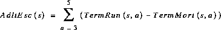

[Chapter Contents]
Adult Escapement
Terminal run fish must pass two obstacles before reaching the spawning grounds: (1) terminal fisheries; and (2) river obstructions, such as dams. Fish passing all terminal fisheries are called the adult escapement. The age two fish returning to the river are not considered reproductively viable, and are not included in the adult escapement for each stock.
  [4.3]
[4.3]
where
[Chapter Contents]